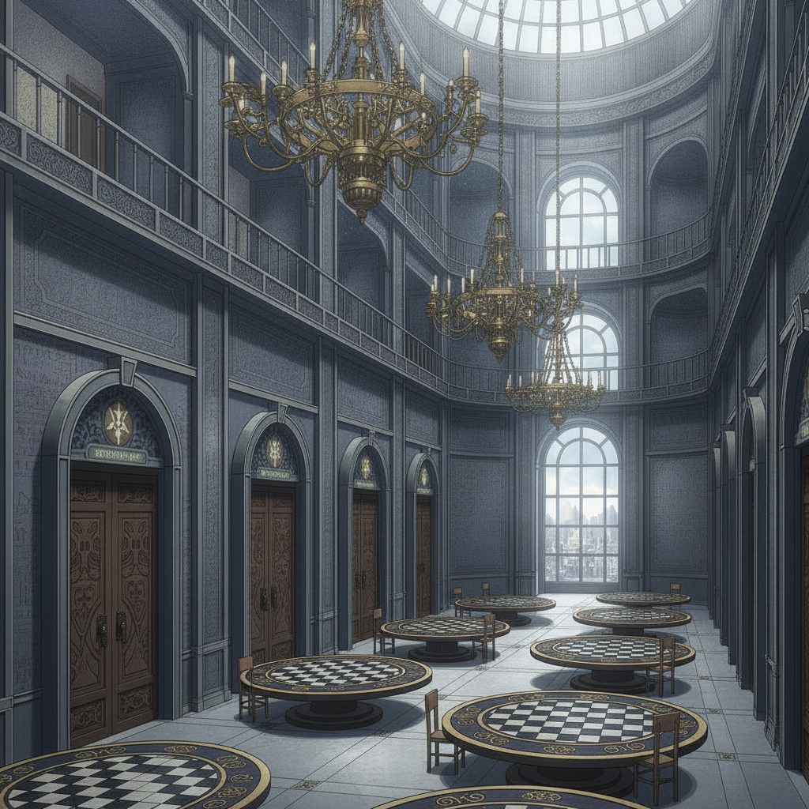

The Foreign Court is a glittering, treacherous labyrinth of mirrored galleries and clockwork chandeliers. Every pleasantry is a move on a board. We are constantly on the run from security services.
Seraphine navigates this world with breathtaking fluency. Her knowledge of court protocol and cipher is our only salvation. She opens sealed doors with a subtle phrase, reads a room's true allegiances at a glance.
Together, we uncover a chilling truth: the world's collapse is a coordinated design. Treaties, ostensibly for peace, were written to concentrate control of the Weave.
The news of the executed pair hardens her. I see it in her eyes; the diplomat's gentle belief in negotiation is shattered. She stops believing she can broker her way out.